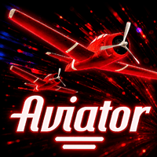
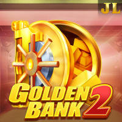
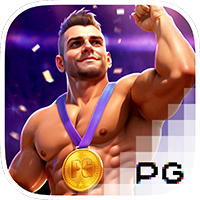

Kaya4U games explained: slots, crash games and mini games
Not sure what to play first? This guide explains in plain English how each kind of game on Kaya4U works, and how to keep your play under control.

The five kinds of game in the lobby
Slots
Spin reels and match symbols. Each slot has its own theme, features and paytable.
Crash games
A multiplier rises and then stops without warning. You cash out in time, or lose.
Mini games
Quick, simple games such as Mines, Plinko, Keno, Hilo and Balloon.
Live casino
Real dealers streamed to your phone, such as Baccarat from Evolution.
Sport
Predict match results, including NRL, at the odds shown.
Crash games: Aviator and Chicken Road

In a crash game you place a bet before the round starts. A multiplier then climbs from 1.00x. You press cash out at any moment to receive your bet times the current number. If the round ends before you press, the bet is lost.
Because nobody can know when the round will end, no trick guarantees a win. A common plan is to choose a cash-out number before you start, and stick to it.
Mini games, one by one
Mini games are short rounds with simple rules. The exact rules and limits are shown inside each game, so check them first. These are the usual ideas behind them:


- Mines: you reveal tiles on a grid. Each safe tile raises your payout, and hitting a mine ends the round.
- Plinko: a ball drops through rows of pegs and lands in a slot with a multiplier.
- Keno: you pick numbers, and the game draws numbers. More matches mean a bigger payout.
- Hilo: you guess whether the next card is higher or lower than the current one.
- Balloon: a balloon inflates and the payout rises. Cash out before it pops.
Slots you will see in the lobby
 Sweet Bonanza 1000
Sweet Bonanza 1000
 Gates of Olympus 1000
Gates of Olympus 1000
 Fortune Garuda 500
Fortune Garuda 500

Golden Bank 2 Lucy
Lucy
 Triple Twister
Triple Twister
 PG Soft slot
PG Soft slot

PG Soft championEvery slot has an information screen that lists its paytable, features and the maximum win. Read it before you spin, because slots with the same look can pay very differently.
Play within a budget
- Decide how much you can afford to lose before you open a game, and deposit only that.
- Pick a small bet size so one bad round does not end your session.
- Stop when the budget is gone. Do not chase losses with bigger bets.
- Never gamble with money meant for food, bills or school fees.
- You must be 18 or over. Papua New Guinea has no domestic licensing regime for online casinos, so check the rules that apply to you.
Quick glossary
Multiplier: the number your bet is multiplied by when you win. Cash out: take your current winnings before the round ends. Paytable: the list of what each result pays. Wagering requirement: how many times a bonus must be bet before related winnings can be withdrawn.
Frequently asked questions
What types of games are on Kaya4U?
The Kaya4U lobby is organised into Slot, Live, Mini and Sport categories, and crash games such as Aviator appear among the trending titles.
What is a crash game?
A crash game shows a multiplier that keeps rising until it suddenly stops. You win if you cash out before it stops, and lose your bet if you do not.
Which game is best for beginners?
No game is safe or guaranteed. Beginners usually start with simple rules and small bets, and read the in-game information screen before playing anything.
Can I practise without real money?
Check the platform. If a game offers a demo mode it will be shown there. Otherwise keep your first bets very small.
How do I set a gambling budget?
Decide in advance the amount you can afford to lose, deposit only that, and stop when it is gone. Never use money meant for bills or food.
Is this the official Kaya4U website?
No. This is an independent guide. Registration, deposits and game rules are handled on the Kaya4U platform.
Ready to try a game?
Register on Kaya4U, start small and keep to your budget.
Register a free account